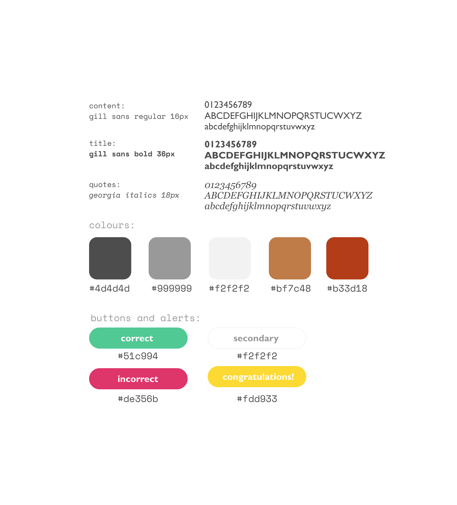

literatura
literatura is a mobile app designed to promote the discovery and facilitate the study of classical works of
literature.
The app uses a collection of summaries and quizzes to help the user better know and understand important plot
points and themes of each novel.
literatura is a project worked on independently, from initial research to development.
Project Type: Personal Timeline: Winter 2019 Tools: Figma, Marvel
Project Type: Personal Timeline: Winter 2019 Tools: Figma, Marvel
Identifying the problem
There exists a vast number of works of classical literature that are culturally significant and worth
studying/understanding.
However, in this day and age, the only real exposure most students get is through the few books they are
forced to read in their high school English courses.
Despite increased accessibility to these books, the interest in them has been declining. This decline can have
severe impacts on a young person's ability to comprehend
the world around them, think critically and become involved in society.

User Research
To better understand the target audience, I interviewed past high school English teachers as well peers on their experiences in high school English, as.
Through these interviews,
I tried to qualitatively get a sense of what made high school English classes insufficient in terms of "getting students
into classical literature"
and why the students themselves were unmotivated to study the novels assigned to them, much less go on their
own and discover new ones. In the end, I came upon these key insights:
- Many students simply found other forms of electronic entertainment more enjoyable and easy to consume, creating instant gratification. These included TV shows/movies, video games, and social media.
- Building off of that, the world of classical literature seems foreign and strange, far removed from our modern world, causing a sense of unfamiliarity and fear for the majority of students.
- Even if a student decides to venture out into the world of classical literature, they can waste a lot of time digging through countless Wikipedia, Goodreads, Sparknotes, etc. articles, which can be confusing and discouraging, and not at all exciting.
The takeaway here is that there is a large disconnect between the cultures of various time periods (in which
classical literature was written) and now. On top of that, there is no easily accessible/centralized hub for
all of the information for the few students that might want to have a go at studying classical literature.
These two factors result in a very discouraging and uncomfortable environment for young people
studying/attempting to study literature.
Design approach
Considering the above factors, the solution must:
- Reframe classical literature in way where it can be integrated with modern culture and the digital age, providing gratification and comfort in a similar way.
- Provide a centralized and accessible hub that is easy for a student to navigate and understand, with the least amount of friction/time wasted.

Ill-advised first attempt at mock-ups in Figma
In hindsight, I was too hasty. I dove headfirst into Android Studio and started developing. While doing so, the lack of further planning and iterations became a large frustration. I ended scrapping the design entirely and starting from scratch, sketching out some wireframes.
Some wireframes
Establishing a visual style
With a new design came a new color palette and fonts, this time with a set guide to prevent further
frustrations. The color palette is mostly greyscale, with rustic brown accents to invoke the experience of
reading an old book.
I opted for Gills Sans as the font, calling upon the work of typographer Jan Tschichold when he came up with
composition rules for publisher Penguin Books. The modern interface provides familiarity, while the typeface
and colors
create a cozy, vintage, time-honored feel. During the quiz, the user will get alerts, which should be exciting
and gratifying, but muted enough to fit in with the rest of the colors.

Final Designs
Here's a quick runthrough of the core features of the app, with each part working together to provide an experience that promotes the discovery and facilitate the study of classical works of
literature:
Home and Book Screens
Users are invited back into studying the books they have been studying, or to search for new ones.
Author and Info Screens
Users search by authors (Left). Users gain information on author and books and are invited to start the quiz (Right).

Quiz Screens
Users are quizzed on the books. High scores for gamification/to track mastery.
Reflections and next steps
- Ignoring the design process and jumping right into high-fidelity is a costly mistake.
- Development on literatura is ongoing, you can check it out on my GitHub! I used a custom API for the quiz questions and answers and Open Library API to fetch book covers and book information.
- In addition to empty states, considering a recommendation system based on similar authors/books, similar to Spotify’s Discover feature
- Leaderboards and rewards to further incentivize learning could be cool.
- Explorations on onboarding (ie. a flow to figure out a user's preferences on first open/before they start learning)
Waterloop Revamp →